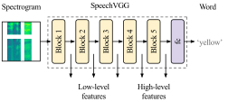

Fig.2 speechVGG, a flexible, transferable feature extractor for speech processing.
speechVGG is a deep speech feature extractor, tailored specifically for applications in representation and transfer learning in speech processing
problems. The extractor adopts the classic VGG-16 architecture and is trained via the
word recognition task. We showed that extractor can capture generalized speech-specific features in a hierarchical fashion.
Importantly, the generalized representation of speech captured by the pre-trained model is transferable over distinct speech processing tasks,
employing a different dataset. In our experiments, we showed that even relatively simple applications of the pre-trained speechVGG
were capable of achieving results comparable to the state-of-the-art, presumably thanks to the knowledge transfer.
For more details and full evaluation, see the original paper.
Python implementation of the speechVGG and models pre-trained on the LibriSpeech dataset
are openly available at: https://github.com/bepierre/SpeechVGG.